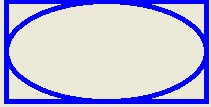

Visual Studio 2013 Lesson 27: Creating Graphics- Ellipse and Circle
[Lesson 26] << [Contents] >> [Lesson 28]
27.1 Drawing Ellipse
We have learned how to draw rectangles with various line styles in Visual Studio 2013 in the previous lesson. Now we shall learn how to draw ellipse and circle.First of all we need to understand the principle behind drawing an ellipse in Visual Studio 2013 . The basic structure of most shapes is a rectangle, ellipse is no exception. Ellipse is an oval shape that is bounded by a rectangle, as shown in Figure 27.1

Figure 27.1
myGraphics.DrawEllipse(myPen, myRectangle)
* Assume you have also already created the Graphics object myGraphics.
Example 27.1(a)
Private Sub BtnDraw_Click(sender As Object, e As EventArgs) Handles BtnDraw.Click
Dim myPen As Pen
myPen = New Pen(Drawing.Color.DarkTurquoise, 5)
Dim myGraphics As Graphics = Me.CreateGraphics
Dim myRectangle As New Rectangle
myRectangle.X = 40
myRectangle.Y = 30
myRectangle.Width = 200
myRectangle.Height = 100
myGraphics.DrawEllipse(myPen, myRectangle)
End Sub
The output image is shown in Figure 27.2
{kind=link}
Figure 27.2
The second method is using the DrawEllipse method without creating a rectangle object. Offcourse you still have to create the Graphics and the Pen objects. The syntax is:
myGraphics.DrawEllipse(myPen, X,Y,Width, Height)
Where (X,Y) are the coordinates of the upper left corner of the bounding rectangle, width is the width of the ellipse and height is the height of the ellipse.
Dim myPen As Pen
myPen = New Pen(Drawing.Color.DarkTurquoise, 5)
Dim myGraphics As Graphics = Me.CreateGraphics
myGraphics.DrawEllipse(myPen, 40, 30, 200, 100)
End Sub
27.2 Drawing a Circle
After you have learned how to draw an ellipse, drawing a circle becomes very simple. We use exactly the same methods used in the preceding section but modify the width and height so that they are of the same values.
The following examples draw the same circle.
Example 27.2(a)
Dim myPen As Pen
myPen = New Pen(Drawing.Color.DarkTurquoise, 5)
Dim myGraphics As Graphics = Me.CreateGraphics
Dim myRectangle As New Rectangle
myRectangle.X = 90
myRectangle.Y = 30
myRectangle.Width = 100
myRectangle.Height = 100
myGraphics.DrawEllipse(myPen, myRectangle)
Example 27.2(b)
Dim myPen As Pen
myPen = New Pen(Drawing.Color.DarkTurquoise, 5)
Dim myGraphics As Graphics = Me.CreateGraphics
myGraphics.DrawEllipse(myPen, 90, 30, 100, 100)
The output image is shown in Figure 27.3
{kind=link}
Figure 27.3